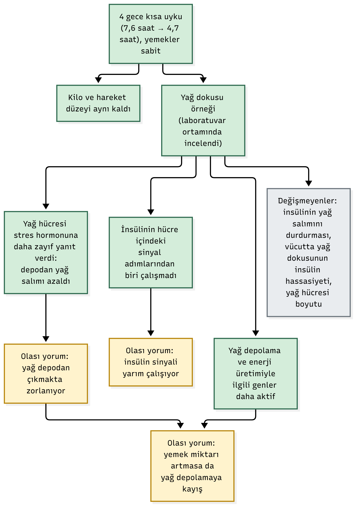

Beslenme bilimi artık tabağın içine sığmıyor. Bir zamanlar her şey enerji dengesi ve makro sayımıydı. Sonra kişiselleştirme geldi: aynı yemeğe farklı kan şekeri yanıtı, bağırsak mikrobiyotası, öğün saati. Ardından hareket, stres, ruh hali, yaşadığımız çevre.
Şimdi bu listeye bir kalem daha giriyor; üstelik tabağımızdan uzakta, ancak her gece bizimle olan bir kalem: uyku.
Eskiden "Ne yediğini söyle, kim olduğunu söyleyeyim" derdik. Belki yakında şunu da danışanlarımıza ve hastalarımıza rutin olarak sormamız gerekecek: Ne kadar uyuyorsun, uyku kaliten nasıl?
Peki uyku beslenmeye gerçekten bu kadar yakın mı? Ve ilişki tek yönlü mü, yoksa bir döngü mü? Bu yazıda ikisine de bakıyoruz.
Kısaca:
- Ne bulundu: Kontrollü deneylerde kısa uyku iştahı ve günlük kalori alımını (yaklaşık 300 kcal'a kadar) artırıyor, diyet sırasında kaybedilen kilonun yağ payını azaltıyor. Ters yön de geçerli: yediğimiz besinler ve yeme saatimiz uyku mimarisini etkiliyor.
- Ne kadar güvenilir: Uyku ve yeme deneylerinde yön oldukça tutarlı ama çalışmalar kısa süreli ve görece küçük örneklemli. Yağ dokusu bulguları 9 kişilik ön bulgu niteliğinde.
- Senin için ne demek: Kilo ve beslenme hedeflerinde uykuyu da hesaba katmak şart. Ancak mükemmel uyku peşinde koşup ortoreksiya benzeri bir uyku kaygısı yaratmaya gerek yok.
Döngünün birinci yarısı: Uykusuz kalan daha çok yiyor
Hikâye 2004'te başladı. Spiegel ve ark. (2004), 12 genç erkeği iki gece boyunca 4 saat uyuttu; yemek ve hareket düzeni sabitti. Tokluk hormonu leptin yaklaşık %18 düştü, iştah hormonu ghrelin yaklaşık %28 yükseldi. Açlık hissi %24, iştah %23 arttı; en çok da kalori yoğun, karbonhidratlı yiyeceklere duyulan istek arttı (%33–45).
Sorun yalnızca hormonal eksende değil, nörobilişsel düzeyde de şekilleniyor. Greer ve ark. (2013) uykusuz kalan gönüllülere yiyecek seçtirirken beyinlerini fMRI ile görüntüledi. Yemeğin değerini ve uzun vadeli sonuçlarını tartan kortikal bölgeler sakinleşirken, duygusal tepkilerle ilişkili amigdala belirgin şekilde hareketlendi; yüksek kalorili yiyecek arayışı tırmandı. Bir nevi karar mekanizmasının fren pedalı gevşiyor, ödül arayan gaz pedalı ise hassaslaşıyor.
Gerçek besin tüketimine gelince: St-Onge ve ark. (2011), 30 yetişkini 5 gece 4 saat, 5 gece 9 saat uyuttu. Kısa uykunun ardından günlük alım yaklaşık 296 kcal arttı (2814 kcal'a karşı 2518 kcal); fazlalığın büyük kısmı yağ kaynaklarından geldi, enerji harcaması ise değişmedi. Spaeth ve ark. (2013) 225 kişide 5 gece boyunca 4 saat uykuyu test etti: kısıtlı grup ortalama 0,97 kg alırken, kontrol grubu yalnızca 0,11 kg aldı. Fazla kalorinin kritik bölümü geceye kaymıştı; 22:00 ile 04:00 arasında ortalama 553 kcal ekstra tüketilmiştı. Covassin ve ark. (2022) ise 12 kişiyle 14 gün sürdürdükleri laboratuvar çalışmasında kısa uykunun viseral (karın içi göbek) yağlanmayı doğrudan artırdığını gösterdi.
Bunların hepsi uykunun kısıtlanması üzerineydi. Peki uyku süresi uzatılırsa ne olur? Tasali ve ark. (2022), günde 6,5 saatten az uyuyan 80 fazla kilolu yetişkini inceledi. Müdahale grubu uykusunu yaklaşık 1,2 saat uzattı ve herhangi bir diyet kısıtlaması almadan günlük kalori alımını yaklaşık 270 kcal azalttı (%95 GA −393 ile −147). Üstelik bu sonuç laboratuvarda değil, serbest yaşam koşullarında çift işaretli su (doubly labeled water) yöntemiyle objektif olarak kanıtlandı.
Yeni açı: Sorun yalnızca ne kadar yediğin değil
Uykunun etkisi porsiyonun büyüklüğüyle sınırlı kalmıyor. Diyet yapan bir bireyin metabolizması uykusuz kaldığında bambaşka bir yakıt dağılımına geçiyor.
Nedeltcheva ve ark. (2010), 10 fazla kilolu yetişkine iki hafta boyunca aynı ölçülü kalori kısıtlamasını uyguladı; bir periyotta geceleri 8,5 saat, diğer periyotta 5,5 saat uyku verildi. İki dönemde de diyet ve tartıdaki toplam kilo kaybı neredeyse farksızdı. Ancak kaybedilen dokunun kompozisyonu radikal biçimde değişti: kısa uykuda yağ kaybı %55 azaldı (1,4 kg yerine 0,6 kg), kas dahil yağsız kütle kaybı %60 arttı (1,5 kg yerine 2,4 kg). Açlık hissi de belirgin şekilde daha yüksekti. Yani aynı kalori açığına rağmen uykusuzluk, giden kütlenin yağ yerine kastan karşılanmasına yol açtı.
Vücut genelinde insülin duyarlılığı da uykudan hızla etkileniyor. Donga ve ark. (2010), 9 sağlıklı gönüllüyü tek gece 4 saat uyuttu; ertesi sabah glukoz kullanım kapasitesi yaklaşık %25 azaldı. Tek bir gecelik parsiyel uykusuzluk dahi periferik insülin direncini tetiklemeye yetiyor.
Yağ dokusunun hücresel dinamiklerinde ise tablo daha da derinleşiyor. Singh ve ark. (2024), 9 sağlıklı postmenopozal kadında dört gece süren uyku kısıtlamasının ardından yağ dokusu biyopsilerini ex vivo ortamda inceledi. Yemekler araştırmacılar tarafından sabitlendi, kalori sabitti, vücut ağırlığı ve fiziksel aktivite değişmedi:
- Yağ hücreleri, vücudun sempatik stres sinyaline (adrenalin/noradrenalin) daha zayıf yanıt verdi: depodan serbest yağ asidi salımı (lipoliz) köreldi.
- İnsülinin hücre içi sinyal basamaklarından birinde iletim bozuldu (selektif sinyal bozukluğu).
- Yağ depolama ve substrat metabolizmasıyla ilişkili gen ekspresyonları belirgin şekilde yukarı regüle oldu.

Döngünün öbür yarısı: Yediklerin de uykunu şekillendiriyor
İlişki tek yönlü bir sokak değil. Tabağımızın kompozisyonu da geceki uyku mimarimizi doğrudan kodluyor.
St-Onge ve ark. (2016), 26 yetişkini kontrollü beslenmenin ardından bir gün serbest besledi. Günlük besin alımı ile polisomnografi (uyku testi) verileri karşılaştırıldığında: yüksek posa (lif) tüketen bireylerde yavaş dalga uykusu (derin, onarıcı uyku evresi) anlamlı derecede daha uzundu. Buna karşılık doymuş yağ payı yüksek olanlarda yavaş dalga uykusu azaldı; rafine şeker ve glisemik yükü yüksek karbonhidratlar ise gece boyunca sık uyanmalarla (arousal) ilişkili bulundu.
Öğün zamanlaması da bu sirkadiyen döngünün kilit bir halkasıdır. Vujović ve ark. (2022), kalori, uyku ve ışık koşulları tamamen sabit tutulduğunda dahi öğünleri geç saatlere kaydırmanın (late eating) ghrelin/leptin oranını bozarak açlığı artırdığını, 24 saatlik enerji harcamasını düşürdüğünü ve yağ dokusunda lipid depolama yönünde genetik reprogramlamaya yol açtığını kanıtladı. Spaeth'in gece atıştırmaları ile Vujović'in geç yeme bulguları yan yana konduğunda: ne yediğimiz, ne zaman yediğimiz ve ne kadar uyuduğumuz birbirini besleyen üç senkronize çarktır.
Madalyonun diğer yüzü: Abartmamak için metodolojik sınırlar
Bu bulgular heyecan verici olsa da klinik sağduyu birkaç çekinceyi zorunlu kılıyor:
- Laboratuvar uç koşulları: Çoğu deneysel protokolde katılımcılar 4 saat gibi sert bir kısıtlamaya maruz bırakılıyor. Gerçek hayatta kronik 4 saat uyku yaygın değildir.
- Statik kalori hesapları yanıltıcıdır: "Günde 270 kcal kısma = yılda 10 kg yağ kaybı" gibi 3500 kcal kuralına dayalı statik hesaplamalar metabolik adaptasyonu göz ardı eder. Vücut yeni denge noktasına ulaştıkça enerji harcamasını dengeler.
- Epidemiyoloji nedenselliği kanıtlamaz: Cappuccio ve ark. (2008), 634.511 kişiyi kapsayan meta-analizinde kısa uyuyanlarda obezite riskini çocuklarda 1,89, yetişkinlerde 1,55 kat yüksek buldu. Ancak kohortların çoğu kesitseldi; obezitenin kendisi de obstrüktif uyku apnesi ve sistemik inflamasyonla uykuyu bozabilir (çift yönlü nedensellik).
- Hücresel yağ dokusu verisi öncü niteliktedir: 9 kişilik postmenopozal kadın grubu üzerinde ex vivo yürütülen biyopsi bulguları genellenemez, bağımsız klinik doğrulamaya muhtaçtır.
**Diyet Kompozisyonu & Yağ Dokusu:** Kilo kaybı sırasında doku kaybı oranı ve yağ dokusu biyopsileri küçük örneklemlere (n=9-10) dayanmaktadır; mekanizmadan türetilen güçlü hipotezlerdir (Kanıt Güveni: Düşük-Orta).
Pratik klinik çıkarımlar
- Beslenme anamnezine uyku parametrelerini entegre edin: Danışan veya hastanın haftalık ortalama uyku süresi, uyku hijyeni ve kronotipi en az besin günlüğü kadar değerli bir parametredir.
- Kilo direnci ve kontrolsüz iştah tablosunda ilk basamak: Diyeti daha da kısıtlamadan önce uykuyu optimize etmek, biyokimyasal açıdan çok daha sürdürülebilir bir müdahaledir.
- Kilo verme sürecinde uykuyu koruyun: Kalori kısıtlaması sırasında uyku yetersizse, tartıda giden kütlenin yarısından fazlası yağ yerine iskelet kası olabilir.
- Gece geç saatlerdeki atıştırma dürtüsünü metabolik okuyun: Bu durum sadece bir "irade zayıflığı" değil; sirkadiyen desinkronizasyon ve prefrontal kortikal kontrolün gevşemesinin nörobiyolojik sonucudur.
- Ortosomniye (mükemmel uyku takıntısına) kapılmayın: Her gece mutlak 8 saat baskısı yaratmak uykusuzluk anksiyetesini tetikleyebilir. Hedef katı mükemmellik değil, sürdürülebilir sirkadiyen istikrardır.
Sonuç
Beslenme bilimi tabağın sınırlarını aşıp kronobiyolojiyle bütünleşiyor. Ne yediğimiz, ne zaman tükettiğimiz ve ne kadar uyuduğumuz bağımsız kompartmanlar değil, birbiriyle sürekli iletişim halinde olan bir sirkadiyen döngüdür. Kanıtlar henüz büyümekte olan genç bir literatüre ait olsa da yön son derece berraktır:
Beslenme sorgulamasında sorulabilecek en maliyetsiz ve etkili sorulardan biri şudur: Geceleri ortalama kaç saat uyuyorsunuz?
📚 Kaynaklar
- Cappuccio FP, Taggart FM, Kandala NB, et al. (2008). Meta-analysis of short sleep duration and obesity in children and adults. *Sleep*, 31(5), 619–626.
- Covassin N, Singh P, McCrady-Spitzer SK, et al. (2022). Effects of experimental sleep restriction on energy intake, energy expenditure, and visceral obesity. *J Am Coll Cardiol*, 79(13), 1254–1265.
- Donga E, van Dijk M, van Dijk JG, et al. (2010). A single night of partial sleep deprivation induces insulin resistance in multiple metabolic pathways in healthy subjects. *J Clin Endocrinol Metab*, 95(6), 2963–2968.
- Greer SM, Goldstein AN, Walker MP. (2013). The impact of sleep deprivation on food desire in the human brain. *Nat Commun*, 4, 2259.
- Nedeltcheva AV, Kilkus JM, Imperial J, et al. (2010). Insufficient sleep undermines dietary efforts to reduce adiposity. *Ann Intern Med*, 153(7), 435–441.
- Singh P, Beyl RA, Stephens JM, et al. (2024). Shortened sleep duration impairs adipose tissue adrenergic stimulation of lipolysis in postmenopausal women. *Obesity*, 32(12), 2264–2274.
- Spaeth AM, Dinges DF, Goel N. (2013). Effects of experimental sleep restriction on weight gain, caloric intake, and meal timing in healthy adults. *Sleep*, 36(7), 981–990.
- Spiegel K, Tasali E, Penev P, Van Cauter E. (2004). Brief communication: Sleep curtailment in healthy young men is associated with decreased leptin levels, elevated ghrelin levels, and increased hunger and appetite. *Ann Intern Med*, 141(11), 846–850.
- St-Onge MP, Roberts AL, Chen J, et al. (2011). Short sleep duration increases energy intakes but does not change energy expenditure in normal-weight individuals. *Am J Clin Nutr*, 94(2), 410–416.
- St-Onge MP, Roberts A, Shechter A, Choudhury AR. (2016). Fiber and saturated fat are associated with sleep arousals and slow wave sleep. *J Clin Sleep Med*, 12(1), 19–24.
- Tasali E, Wroblewski K, Kahn E, Kilkus J, Schoeller DA. (2022). Effect of sleep extension on objectively assessed energy intake among adults with overweight in real-life settings: a randomized clinical trial. *JAMA Intern Med*, 182(4), 365–374.
- Vujović N, Piron MJ, Qian J, et al. (2022). Late isocaloric eating increases hunger, decreases energy expenditure, and modifies metabolic pathways in adults with overweight and obesity. *Cell Metab*, 34(10), 1486–1498.